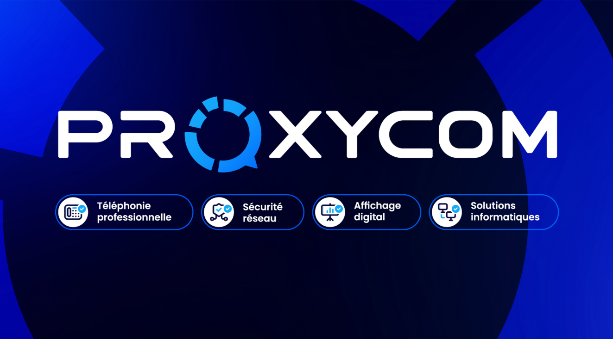

2025 - 2026
Proxycom – Noidans-lès-Vesoul

Alternant technicien réseau – Proxycom
Suite à mon stage, j’ai rejoint Proxycom en alternance pour ma 2e année de BTS SIO SISR. Je continue à travailler sur des missions réseau et support.
- Déploiement et configuration de routeurs, bornes Wi-Fi et équipements réseau.
- Participation au support utilisateurs et aux interventions sur site.
- Mise en place et suivi de solutions de sécurité (VPN, firewall, segmentation).
- Montée en compétences continue sur les environnements systèmes & réseaux.